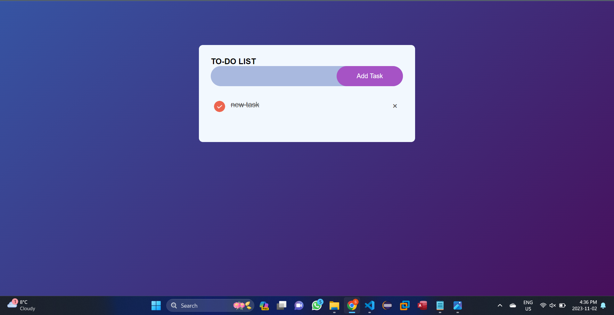
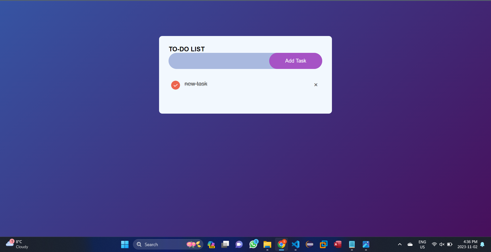

Projects
Project-1 : CSS For Web Development
Date of Completion: October 10, 2023
Primarily a web programming lab exercise, this project is meant to serve as a teaching tool for CSS
(Cascading Style Sheets).
It offers thorough explanations and illustrations of CSS, assisting students in comprehending and
utilizing the language for web design and styling.
The project probably explains CSS ideas like selectors, properties, and values and shows how to
apply CSS to modify the appearance and layout of online content. It could also use real-world
examples and useful applications to highlight CSS's adaptability and strength in web development.
This project essentially serves as a learning tool to improve one's understanding of CSS and its
function in producing visually pleasing and organized web pages.
Skills Used
- HTML
- CSS
Project-2:To Do List
Date of Completion: October 20, 2023
The project is a straightforward to-do list webpage that helps users organize and prioritize their
chores.
Adding tasks to the list and indicating what has to be done are two options available to users. Once
a job is finished or becomes irrelevant, it may be removed.
It's a useful tool for task management and productivity since it helps people stay organized and
stay on top of their duties.
To ensure that nothing crucial is missed and that users can effectively prioritize and finish their
chores, the to-do list is an easy-to-use method of keeping and organizing a list of tasks.
Skills Used
- HTML
- CSS
- JavaScript
.png) 

Project-3:Jokes Generetor
Date of Completion: November 2, 2023
This project, which started out as a lab exercise, is a fun webpage containing a variety of funny
jokes.
It uses a combination of HTML, CSS, and JavaScript to create a dynamic and engaging user experience.
While CSS gives the display a beautiful appearance, HTML.
This project's real charm is found in its usage of JavaScript, which generates and displays jokes in
a random manner on the spot.
Users are promised a new, funny joke every time we open or refresh the website, and a 'Tell me a
joke button' to get a random joke.
Skills Used
- HTML
- CSS
- JavaScript
Project-4: Guitar Rental Application
Date of Completion: October 20, 2023
The project was based on the databse assignment . A database application designed specifically for
guitar rental businesses is this project.
Its main goal is to simplify and arrange the rental of guitars by providing a systematic approach to
managing inventory, client data, rental contracts, and history.
It streamlines processes, improving productivity and client satisfaction. Individuals or groups that
rent out guitars may efficiently manage their inventory and client information because of this
database assignment.
Skills Used
- MS Access
- MSSQL
.png)
.png)